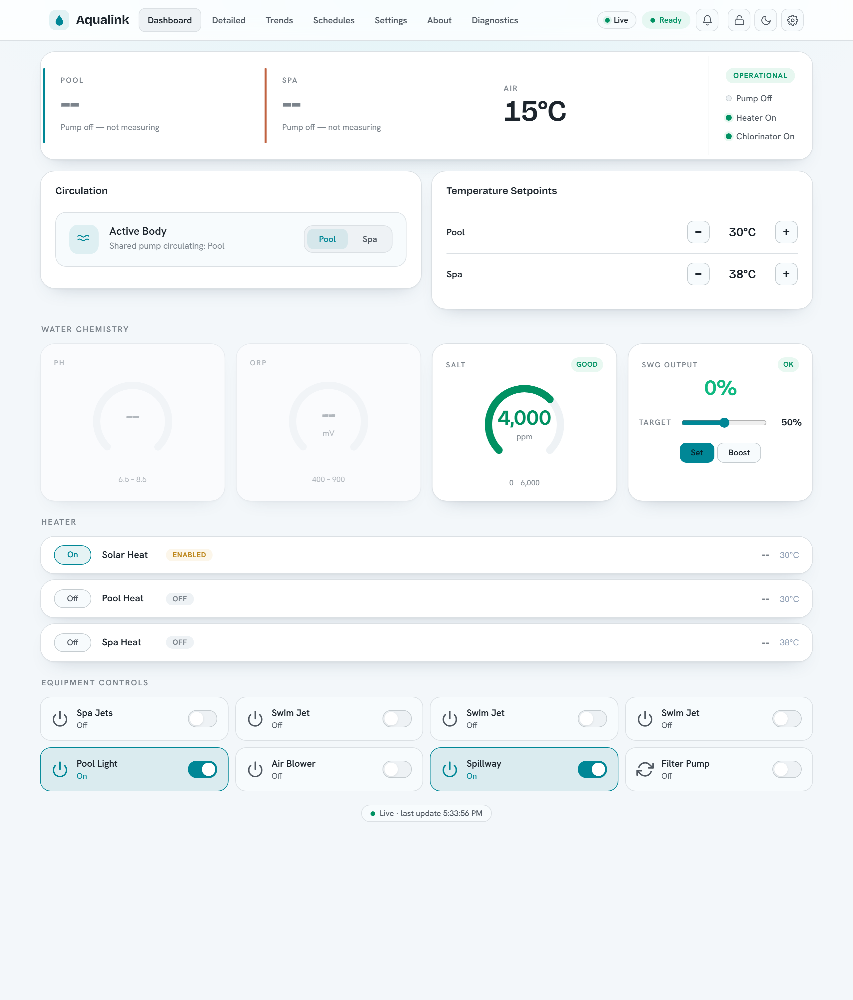

Local control of your pool. No cloud.
Local control of Jandy/Zodiac (Fluidra) Aqualink RS and Pentair pool controllers over RS-485 — Web UI, HTTP API, MQTT, and a Matter bridge, with no cloud service required.
Aqualink Automate¶
Local control of Jandy/Zodiac (Fluidra) Aqualink RS and Pentair pool controllers over RS-485 — Web UI, HTTP API, MQTT, and a Matter bridge, with no cloud service required.


Aqualink Automate is a C++ service that talks to your pool equipment over an RS-485 serial link and exposes it on your own network. It reads status from the panel and lets you control it through a built-in Web UI, an HTTP and WebSocket API, MQTT (with Home Assistant discovery), and a Matter bridge for Apple Home, Google Home, Alexa, and SmartThings. The web UI is available in nine languages (with full right-to-left support), and community translations are easy to add. Everything runs on hardware you own; nothing is sent to a vendor cloud.

Install¶
The quickest path is the signed package repositories — install and stay current with your system package manager:
Then sudo apt upgrade / sudo dnf upgrade keeps it current. Builds are provided
for amd64 and arm64 (Raspberry Pi). The repositories are GPG-signed with
this key.
For pre-built binaries, dev containers, Docker, and building from source, see the Install guide.
Before exposing it on your network
By default the web server binds to 127.0.0.1 (localhost only) and
authentication is off. Enable the built-in identity system with
--auth-mode enabled (first-run wizard, users/groups, API keys, guest and
kiosk access), and review the Security guide and the
Configuration reference first.
Where to next¶
- Install — releases, Docker, dev container, build from source.
- Configuration — every CLI flag and config-file key.
- Usage, HTTP API & WebSocket — drive it programmatically.
- MQTT & Home Assistant — auto-discovery and topics.
- Matter — pair the pool into Apple Home, Google Home, Alexa, SmartThings.
- Raspberry Pi — run it on a Pi.
- RS-485 wiring — adapters and physical connection.
Contributors should start with the Development section.
Supported equipment¶
Two RS-485 protocols are supported and auto-detected from the wire traffic: Jandy/Zodiac (Fluidra) Aqualink RS and Pentair. The GitHub repository has the full source, issue tracker, and changelog.
Questions and support¶
- Bugs and feature requests — open an issue.
- Questions, ideas, and help — start a GitHub Discussion.